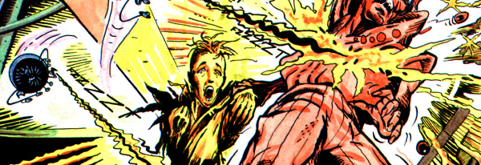

Ahead of its time: a cyberpunk thriller cross between Johnny Mnemonic and The Net (both from 1995), with a climactic nod towards The Matrix (1999), as Nina (an elite member of a heirarchical future society) loses her status and becomes a shadow-person.
Art by Richard Elson
| Story Title | Parts | Pages | w indicates a wraparound coverCovers | Year(s) | Issues | Writer | Artist | Colourist | Letterer |
|---|---|---|---|---|---|---|---|---|---|
| Shadows | 10 | 54 | 676: Richard Elson 679: Richard Elson 2 | 1990 | 672-681 | Peter Milligan | Richard Elson | Tim Perkins | Steve Potter |
| >> Posters << | |||||||||
| This is the Dead Land | 1 | 1 | 0 | 1990 | 681 | n/a | Richard Elson | <-- | n/a |
| year | episodes | pages |
| 1980 | 0 | 0 |
| 1981 | 0 | 0 |
| 1982 | 0 | 0 |
| 1983 | 0 | 0 |
| 1984 | 0 | 0 |
| 1985 | 0 | 0 |
| 1986 | 0 | 0 |
| 1987 | 0 | 0 |
| 1988 | 0 | 0 |
| 1989 | 0 | 0 |
| 1990 | 10 | 54 |
| 1991 | 0 | 0 |
| 1992 | 0 | 0 |
| 1993 | 0 | 0 |
| 1994 | 0 | 0 |
| 1995 | 0 | 0 |
| 1996 | 0 | 0 |
| 1997 | 0 | 0 |
| 1998 | 0 | 0 |
| 1999 | 0 | 0 |
| 2000 | 0 | 0 |
Comic strip data (excludes other content):